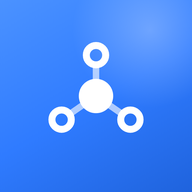

Собрана слоями: значения → атомы → молекулы → организмы → шаблоны. Каждый следующий слой складывается из предыдущего и ничего не изобретает заново.
Значения, из которых собрано всё остальное: цвет, градиенты, тени, шрифт, ритм, скругления. Меняются только здесь.
miniapp/css/tokens.cssСиний — единственный акцент: действие, ваш круг, нить доверия. Зелёный только для подтверждений, оранжевый только для подозрения в накрутке.
Переходы мягкие, без резких границ. Свечение появляется там, где есть действие или где вы сами.
Manrope во всех ролях. Иерархию держит насыщенность, а не размер. Цифры одинаковой ширины.
Неделимые элементы. Атом не знает, где он стоит, и сам себе внешних отступов не назначает.
miniapp/css/atoms.cssКруг знакомства виден по обводке: синяя — ваш контакт, светлая — второй круг, без обводки — дальше. Свой портрет подсвечен.
40 до минимума · конкретика помогает другим
Два-три атома ради одной задачи. Главная молекула системы — нить доверия: строкой и сверху вниз.
miniapp/css/molecules.cssУ искомого человека кружок закрашен и подсвечен.
Вместо голых чисел: кто советует и кого знает человек. Строка нажимается и ведёт дальше.
Место, фирма, ссылки: значок у первой строки, текст, стрелка у правого края. Подписей нет — по значку понятно. «Что делают» — главное строкой и направления плашками.
Слева что, справа сколько; строка без тире — мелкой пометкой.
Всегда скруглённый квадрат, радиус от размера. Люди — кружки, места и фирмы — квадраты. Есть логотип — стоит он.

Самостоятельные куски экрана. Каждый отвечает за один смысл целиком.
miniapp/css/organisms.cssПортрет и имя, значок «надёжно», крупно сфера, нить, числа, лица рекомендателей и кнопка. Первая карточка в ленте — синяя.
Одно главное дело на экране — синей карточкой.
Ищу хорошего педиатра рядом с Юнусабадом — сестре с малышом нужен постоянный врач.
Добавлены 20–26.09. Живые примеры на тех же классах, что в приложении.
miniapp/css/organisms.css, tour.cssСколько людей могут найти вас через тех, кто советует. Показывается тем, кто оказывает услуги.
Строками на синей карточке: значок, крупно что выбрать, мелко одной строкой зачем.
Название целиком, кнопки строкой под ним. Логотип — в квадрате.
Как в Telegram: камера в углу — сменить фото или поставить живую аватарку.
Последний шаг «Как это работает»: облако с аватаркой внутри и пометкой «разработчик».
«Сарафан в чатах»: строки со значком, сгруппированы по местам.
@sarafanibot педиатрКак организмы расставлены на экране: поля, шапки, заголовки разделов, полоса действий, ритм и появление.
miniapp/css/templates.css